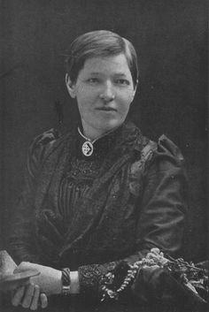

Mary Slessor
1848-1915
One of the most impactful women in the 19th country
Mary Slessor is known for christian missionary work in Africa,women's rights and rescuing children from infanticide

Mary Slessor was a hard working Scottish mill girl and an unorthodox Sunday School teacher, who, inspired by David Livingstone, became a missionary in Calabar, Nigeria, an area where no European had set foot before. Despite several bouts of illness and constant danger, she lived with the tribes, learned their language, and traditions, earning their respect and putting an end to some barbaric practises, such as the killing of twins. She adopted many Nigerian children (particularly twins) who had been left to die.When Southern Nigeria became a British Protectorate, she became the first ever female Magistrate in the British Empire and a skilful diplomatic emissary.Mary died in 1915, aged 67, with great mourning amongst the tribes to whom she had dedicated her whole life.
The following is the timeline of Mary Life
- 1848- Mary Slessor was born on 2 December in Gilcomston, Aberdeen, Scotland.
- 1848- She was from a poor working-class family. She was the second of seven children of Robert.Her father, originally from Buchan, was a shoemaker by trade.
- 1860- The family moved to Dundee in search of work.Robert Slessor was an alcoholic and, unable to keep up shoemaking, took a job as a labourer in a mill. Her mother was a skilled weaver and went to work in the mill.
- 1860- At the age of eleven, Mary began work as a "half-timer" in the Baxter Brothers' Mill, meaning she spent half of her day at a school provided by the mill owners and the other half working for the company.The Slessors lived in the slums of Dundee. Mary's father and both brothers died of pneumonia, leaving behind only Mary, her mother, and two sisters.
- 1863- By age fourteen, Mary had become a skilled jute worker, working from 6 a.m. to 6 p.m. with just an hour for breakfast and lunch.Her mother was a devout Presbyterian who read each issue of the Missionary Record, a monthly magazine published by the United Presbyterian Church (later the United Free Church of Scotland) to inform members of missionary activities and needs.[3] Slessor developed an interest in religion and when a mission was instituted in Quarry Pend (close by the Wishart Church), she wanted to teach.
- 1876- Slessor was 27 when she heard that David Livingstone, the famous missionary and explorer, had died and decided she wanted to follow in his footsteps.ventually, Slessor applied to the United Presbyterian Church's Foreign Mission Board. After training in Edinburgh, she set sail in the SS Ethiopia on 5 August, and arrived at her destination in West Africa just over a month later.
- 1877- Slessor, 28 years of age, red haired with bright blue eyes,was first assigned to the Calabar region in the land of the Efik people. She was warned that they believed in traditional West African religion and had superstitions in relation to women giving birth to twins. Slessor lived in the missionary compound for three years, working first in the missions in Old Town and Creek Town. She wanted to go deeper into Calabar, but she contracted malaria and was forced to return to Scotland to recover.
- 1879- She left Calabar for Dundee
- 1881- After 16 months in Scotland, Slessor returned to Calabar, but not to the same compound. Her new assignment was three miles farther into Calabar, in Old Town. Since Slessor assigned a large portion of her salary to support her mother and sisters in Scotland, she economised by learning to eat the native food.Issues Slessor confronted as a young missionary included the lack of Western education, as well as widespread human sacrifice at the death of a village elder, who, it was believed, required servants and retainers to accompany him into the next world.
- 1881-1882- According to W. P. Livingstone, when two deputies went out to inspect the Mission,they were much impressed. They stated, she enjoys the unreserved friendship and confidence of the people, and has much influence over them". This they attributed partly to the singular ease with which Slessor spoke the language.
- 1885- After only three more years, Slessor returned to Scotland on yet another health furlough. During the next three years, Slessor looked after her mother and sister (who had also fallen ill), and spoke at many churches, sharing stories from the Calabar area.Once this was over, Slessor returned to area further away from central Calabar, from the areas which had already eliminated the more heathen practices. She saved hundreds of twins out of the bush, where they had been left either to starve to death or be eaten by animals. She helped heal the sick and stopped the practice of determining guilt by making the suspects drink poison. As a missionary, she went to other tribes, spreading the word of Jesus Christ.
- - During this third mission to Calabar, Slessor received news that her mother and sister had died. She was overcome with loneliness, writing,there is no one to write and tell my stories and nonsense to.She had also found a sense of independence, writing, "Heaven is now nearer to me than Britain, and no one will worry about me if I go up country.Slessor was a driving force behind the establishment of the Hope Waddell Training Institute in Calabar, which provided practical vocational training to Efiks. The superstitious threat against twins was not only in Calabar; but also spread to a town called Arochukwu on the far west of Calabar. The people of Calabar belong to the Efik tribe though the popular Arochukwu town is at the Igbo tribe's region. Both Calabar and Arochukwu share some common cultures and are in southeastern Nigeria, precisely Cross River State and Abia State respectively
- 1848-1915- For the last four decades of her life, Slessor suffered intermittent fevers from the malaria she contracted during her first station to Calabar. However, she downplayed the personal costs, and never gave up her mission work to return permanently to Scotland. The fevers eventually weakened Slessor to the point she could no longer walk long distances in the rainforest, but had to be pushed along in a hand-cart. In early January 1915, while at her remote station near Use Ikot Oku, she suffered a particularly severe fever. Slessor died on 13 January 1915.